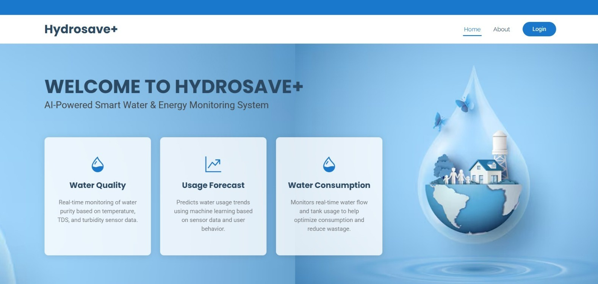
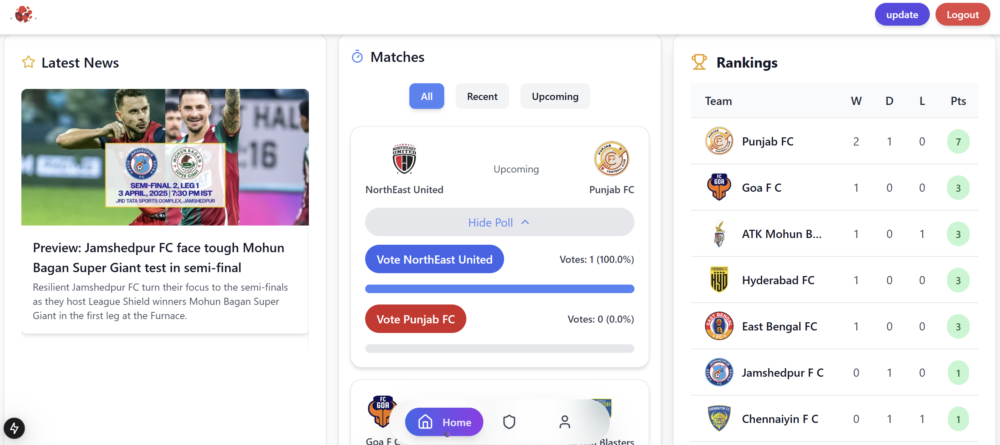

HydroSave+
AI-Powered Smart Water Monitoring System

HydroSave+ — Smart Water Monitoring System
About the Project
HydroSave+ is an IoT-based smart water management system designed to monitor water level, consumption, and quality while helping users understand their water usage patterns.
The system combines sensors, Arduino, and ESP32 communication with a web-based dashboard for real-time monitoring. A Random Forest machine learning model analyses usage patterns to predict future water demand.
Key Features
- Real-time water-level and consumption monitoring
- Water-quality monitoring using TDS, turbidity, and temperature sensors
- Machine-learning-based water-demand prediction
- Web dashboard for monitoring and visualization
- Water-quality alerts and local OLED display
AISAT Super League
ASL Management System

AISAT Super League — Management System
About the Project
The AISAT Super League Management System is a football league platform developed to simplify league administration and improve access to match-related information.
The system supports activities such as team and player management, match scheduling, score updates, and fantasy league participation. It was developed using JavaScript and Next.js, with MongoDB for database management.
Key Features
- Team and player management
- Match scheduling and score updates
- User registration and login
- League information and ranking updates
- Fantasy league participation